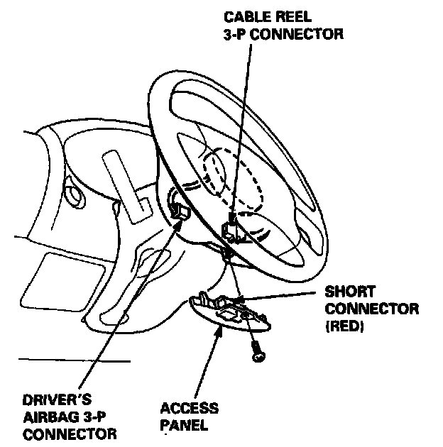
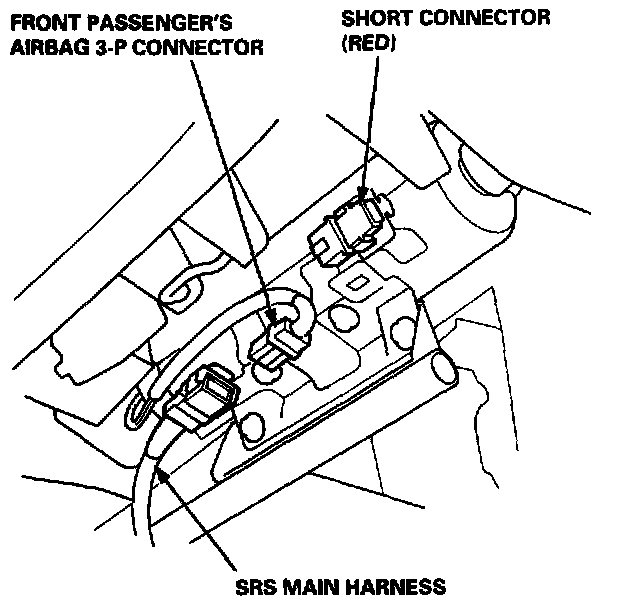
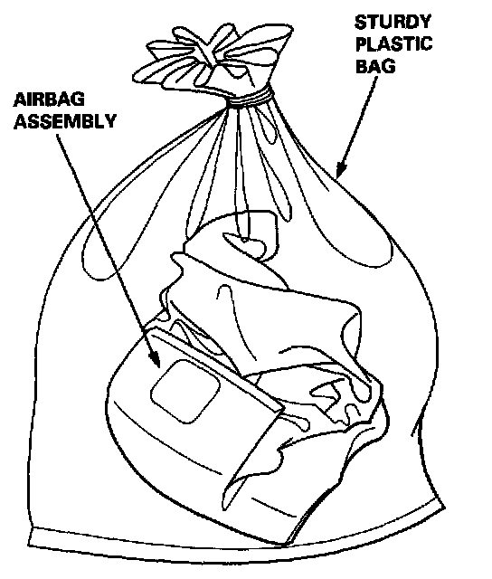
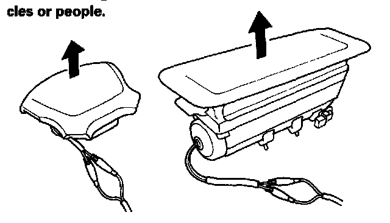

Airbag Deployment and Disposal (Outside Vehicle)



Airbag Assembly Disposal
Before scrapping any airbag(s) (including one in a whole car to be scrapped), the airbag must be deployed. If the car is still within the warranty period, before you deploy the airbag, the Acura District Service Manager must give approval and/or special instructions. Only after the air- bag has been deployed (as the result of vehicle collision, for example),it can be scrapped. If the airbag(s) appear(s) intact (not deployed) treat it (them) with extreme caution.
Follow this procedure:
Deploying the Airbag(s): In-car
NOTE: If an SRS car is to be entirely scrapped, its airbag(s) should be deployed while still in the car. The airbag(s) should not be considered as salvageable pant(s) and should never be installed in another car.
WARNING: CONFIRM THAT EACH AIRBAG ASSEMBLY IS SECURELY MOUNTED; OTHERWISE, SEVERE PERSONAL INJURY COULD RESULT FROM DEPLOYMENT.


Deploying the Airbag: Out-of-car.
NOTE: If an intact airbag assembly has been removed from a scrapped car, or has been found defective or damaged during transit, storage or service, it should be deployed as follows:
WARNING: POSITION THE AIRBAG ASSEMBLY FACE UP, OUTDOORS ON FLAT GROUND AT LEAST THIRTY FEET FROM ANY OBSTACLES OR PEOPLE.
1. Confirm that the special tool is functioning properly by following the check procedure on this page or on the tool box label.
2. Remove the short connector from the airbag connector.
3. Follow steps 5, 6, 7, and 8 of the in-car deployment procedure.
Damaged Airbag Special Procedure.
WARNING: IF AN AIRBAG CANNOT BE DEPLOYED, IT SHOULD NOT BE TREATED AS NORMAL SCRAP; IT SHOULD STILL BE CONSIDERED A POTENTIALLY EXPLOSIVE DEVICE THAT CAN CAUSE SERIOUS INJURY.
1. If installed in a car, follow the removal procedure.
2. In all cases, make sure a short connector is properly installed on the airbag connector.
3. Package the airbag in exactly the same packaging that the new replacement part came in.
4. Mark the outside of the box "DAMAGED AIRBAG NOT DEPLOYED" so it does not get confused with your parts stock.
5. Contact your Acura District Service Manager for how and where to return it for disposal.
Deployment Tool: Check Procedure.
1. Connect the yellow clips to both switch protector handles on the tool; connect the tool to a battery.
2. Push the operation switch, green means the tool is OK; red means the tool is faulty.
3. Disconnect the battery and the yellow clips.